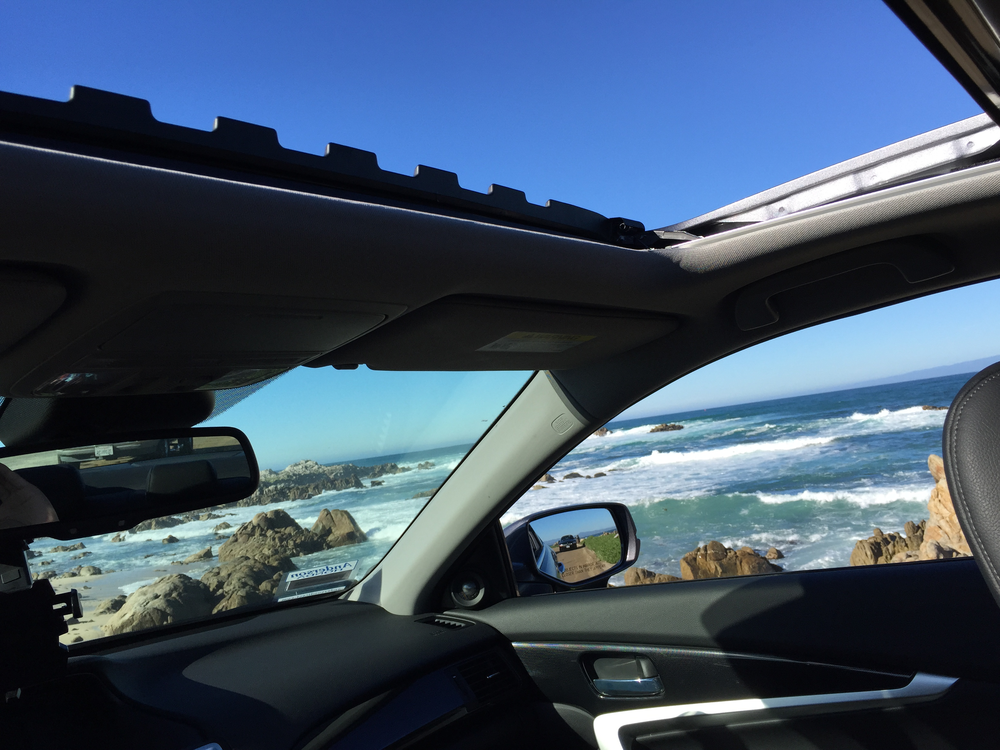

（王垠 yinwang.org 版权所有，未经许可，请勿转载）
圣诞节对于我来说是一个无关紧要的节日。我不信基督教，我甚至不清楚耶稣到底是好人还是坏人，所以我不知道这个节日是在纪念世界的救星还是灾难。但由于圣诞节在基督教国家具有法定假日和热闹欢喜的气氛，我也趁这个节日玩一玩，放松一下。看看我昨天去哪里睡的午觉：

我总觉得自己像是程序世界里的杨过。编程的世界就像江湖武林，充满了宗派斗争，要拼个你死我活。我先后投奔过好几个门派，甚至被逐出师门（Cornell的臭道士们），然后又另投他山（Indiana），遇到世外高人，中途又路遇为自己师门所不齿的旁门左道（Python），偷学了几招。但奇怪的是，经过这一系列经历，我吸取了各个门派（包括旁门左道）里面最精髓的思想，修补了这些门派传人由于“忠于师门”而坚持犯下的历史错误。最后，当其他人还在对各种武器左挑右选或者盲目排斥的时候，我已经达到了无剑胜有剑的地步，拿一根树枝同样战胜敌手。
我把以前写过的经验性和感悟性的文章恢复出来了，也许可以给某些人一些启发和鼓励。然而由于我所看到的一些人的嫉妒和尖酸，有技术指导性质的文章是不会恢复了，我也不会再费时间来写更多的技术文章了。把技术的细节或者精华写出来，等于把武功秘籍给了所有人，不分好坏，这是相当危险的。经历千辛万苦得到的东西，岂是可以随便给人的。有人提议我写出来“付费阅读”，可是他没有想到，我为这些东西付出的是生命，所以真的不是钱可以买到的。而且这种东西就像武功一样，就算我愿意教你也不一定能教得会的。所以各位还是好自为之吧。
祝大家圣诞快乐！